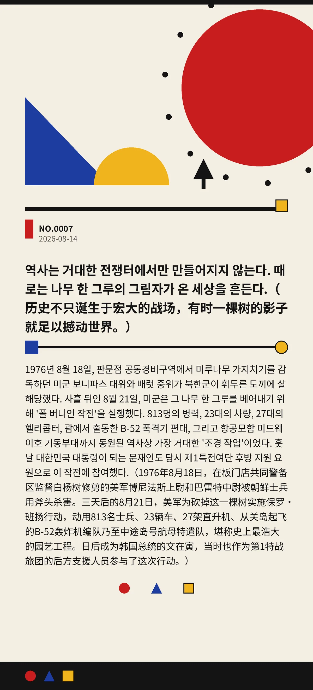

역사는 거대한 전쟁터에서만 만들어지지 않는다. 때로는 나무 한 그루의 그림자가 온 세상을 흔든다.（历史不只诞生于宏大的战场，有时一棵树的影子就足以撼动世界。）
1976년 8월 18일, 판문점 공동경비구역에서 미루나무 가지치기를 감독하던 미군 보니파스 대위와 배럿 중위가 북한군이 휘두른 도끼에 살해당했다. 사흘 뒤인 8월 21일, 미군은 그 나무 한 그루를 베어내기 위해 '폴 버니언 작전'을 실행했다. 813명의 병력, 23대의 차량, 27대의 헬리콥터, 괌에서 출동한 B-52 폭격기 편대, 그리고 항공모함 미드웨이호 기동부대까지 동원된 역사상 가장 거대한 '조경 작업'이었다. 훗날 대한민국 대통령이 되는 문재인도 당시 제1특전여단 후방 지원 요원으로 이 작전에 참여했다.（1976年8月18日，在板门店共同警备区监督白杨树修剪的美军博尼法斯上尉和巴雷特中尉被朝鲜士兵用斧头杀害。三天后的8月21日，美军为砍掉这一棵树实施保罗·班扬行动，动用813名士兵、23辆车、27架直升机、从关岛起飞的B-52轰炸机编队乃至中途岛号航母特遣队，堪称史上最浩大的园艺工程。日后成为韩国总统的文在寅，当时也作为第1特战旅团的后方支援人员参与了这次行动。）
17d95ce1c3cf1bb1冷知识由执笔的模型自行查证。逐条断言、来源与所引原句存档在纯文字副本里，未经程序逐字校验，留作事后核实。